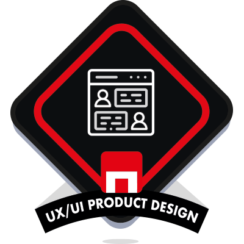

Mariangelica Rodríguez
Diseñadora UX | Desarrolladora Full Stack
Hola, estoy encantada de que estés por aquí y que conozcas un poco sobre mí.

Hola, estoy encantada de que estés por aquí y que conozcas un poco sobre mí.
Seguramente creas que soy canaria de toda la vida, pero en realidad nací en Valencia, Venezuela.
Además quiero aprender tiro con arco
Estudié anteriormente en The Bridge y me gradué de UX/UI product designer, toda una experiencia que vuelvo a tener ahora para graduarme de Desarrolladora Full Stack
Los trabajos que he desempeñado han sido de cara al público, me gusta ayudar a los demás, me hace sentir genial y es algo que me gusta poner en práctica constantemente.